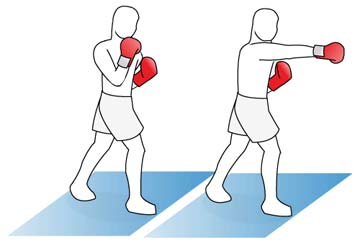
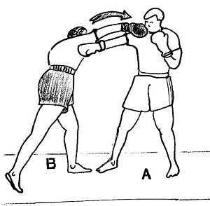
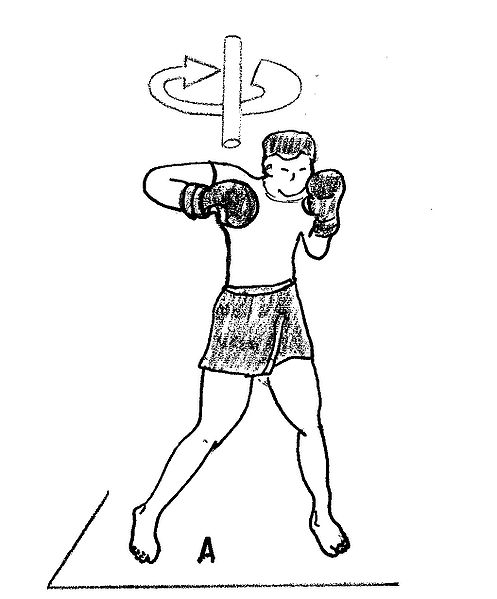
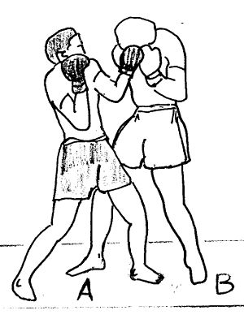

Jab
La tecnica del Jab consiste en lanzar el puño de la pierna adelantada, de forma recta. Esta tecnica puede ir a dos alturas, a la parte alta apuntando a la cabeza o a la parte media conectando el golpe a la boca del estomago. Esta tecnica se suele utilizar para frenar el movimiento del rival, el cual tiene intención de llevarte contra las cuerdas.
Directo
La tecnica del Directo(Right Cross en ingles), consiste en lanzar el puñ trasero, esta tecnica se utiliza para conectar golpes despues de un Jab o tras una esquiva para propinar golpes duros y que puedan provocar un K.O.
Crochet
Este puñetazo requiere un gran juego de caderas y de tobillos, el golpe para ser efectivo al 100% debe empezar con un giro de tobillos, pasando por meter la cadera y transmitiendo toda la fuerza obtenida en el giro al puño, este golpe se suele utilizar tras un amago de jab para golpear en la cara y provocar una distracción para conectar otros golpes, tambien puede ser utilizado tras una combinacion de golpes como por ejemplo: Jab, directo, crochet; Hook, Crochet; Tambien se puede realizar tras algunas esquivas.
Hook

Este tipo de golpes son similares al crochet en cuanto a ejecucion, pero van destinados a dañar el higado, situado en la parte derecha del oponente y el bazo, situado en la parte izquierda del oponente.
Uppercut
Un golpe bastante complicado de encajar si el rival suele tener la guardia junta y solida, es un golpe ascendente con la intencion de golpear en la barbilla, tambien podria golpear directamente a la boca del estomago aun que para golpear en esa zona es mas recomendable lanzar un directo.